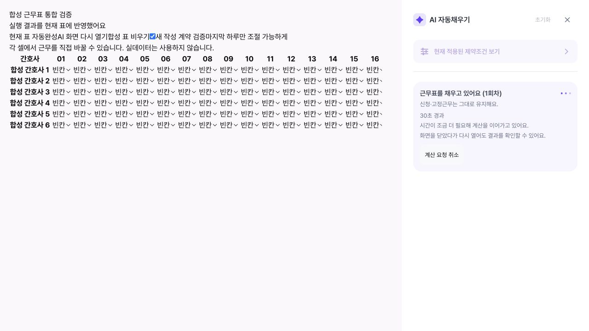
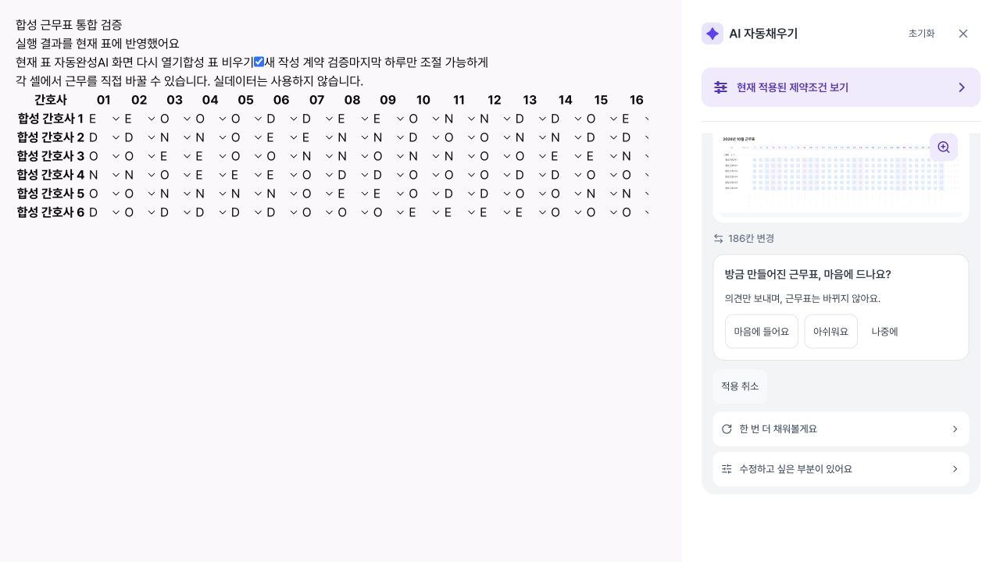
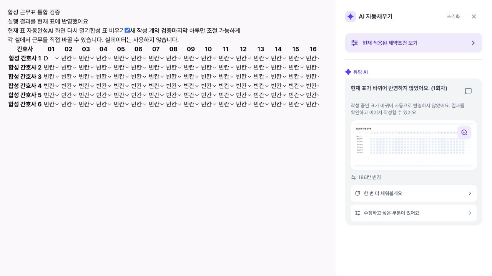

30초 이후에도 결과를 받을 수 있는 백그라운드 자동완성
2026-10-28 · 합성 병동 · 로컬 실제 HTTP/브라우저 통합 검증 · 운영 미배포
실제 로그인 → Vite 프론트 → Spring 작업 접수/기록 → FastAPI CP-SAT → Python/Spring 검증 → 결과 버전 저장 → 프론트 반영을 연결했다. 41~46초 걸린 작업이 정상 완료됐으며, 지연 없는 합성 케이스는 약 1.2초에 끝났다.
동작과 보호 장치
- 실행 요청은
202와 작업 ID를 먼저 반환한다. 프론트는 대기·계산·검증 상태 및 경과 시간을 표시하며 30초 이후에도 조회한다. - 화면 닫기나 새로고침은 계산을 취소하지 않는다. 같은 작업 이력과 보류된 요청을 이어받고 중복 실행하지 않는다.
- 취소는 저장된 작업을 CANCELLED로 바꾼다. 이미 시작한 원격 계산은 제한 시간 안에서 종료하도록 두되 슬롯을 조기에 풀지 않으며 늦은 결과는 반영하지 않는다.
- 중간에 표·조건·행 순서가 바뀌면 결과를 저장하되 현재 편집을 덮어쓰지 않는다. 재진입 시 순위 숫자 재번호만 바뀐 것은 동일한 실제 행 순서로 판단한다.
- 기존 동기 요청 및 전체 검증, 고정 배정, 사용자 동의, 사용량 제한은 유지한다. 큐는 한 작업 실행·네 작업 대기로 제한한다.
실제 브라우저 시나리오
아래 시간은 저장된 작업의 접수~종료 시각 차이다. 지연은 테스트 서버가 실제 CP-SAT 실행 전에 35~45초 대기하도록 통제한 것이다. 솔버가 CPU를 45초 썼다는 주장은 아니다. 응답 모의 데이터 대신 실제 생성 결과와 독립 검증을 사용했다.
2번의 클라이언트 재진입 오인은 메타데이터 정규화 후 4번에서 해결을 확인했다. 3번은 격리된 합성 병동의 실제 사용량 제한이 발동한 결과다. 반복 QA 중 해당 전용 Redis 카운터만 초기화했고 운영 정책은 수정하지 않았다. 5번은 취소 후 원격 계산이 끝난 뒤에도 CANCELLED/NOT_APPLIED가 유지됐다. 새 계약을 쓰는 정상 결과는 Python·Spring 모두 VERIFIED였다.
30초 경과 화면

정상 완료

수동 편집 보호

회귀 검증
- Python 관련 249개 통과: 기존 생성·조절, 새 계약, 부분 표, 인력·공휴일, 솔버 슬롯·취소·타임아웃·확장 예산 포함.
- 프론트 관련 293개 통과(최신 develop 통합 후): 기존 사이드바 흐름, 재진입·적용 보호, 오류 안내, 상태 표시, 5분 이후 폴링 포함.
- Spring 관련 310개 통과: 구형 계산 서버 호환성 및 관리자/익명 접근 경계 포함.
- 격리된 실제 Spring HTTP 호스트 테스트 성공. 타입 검사, ESLint, Ruff, 변경 파일 포맷 및 diff 검사를 수행했다.
배포 순서와 한계
Python → Spring → 웹 순서로 반영하면 전체 장기 탐색을 사용할 수 있다. 구형 웹의 동기 호출은 유지한다. 구형 Spring은 새 비동기 헤더를 무시하고 기존 호출로 처리한다. 새 Spring이 구형 Python의 정확한 15초 예산 스키마 거부를 받으면 계산 시작 전 한 번만 구형 요청 형식으로 전환한다. 다른 오류나 이미 계산한 결과는 재실행하지 않는다.
백그라운드 모드는 전체 최대 240초, 주 탐색 120초·기존 보조 탐색 60초다. 최적값이 빨리 나오면 즉시 끝난다. 4분 안에도 후보를 찾지 못하면 기존 표를 유지하며, 불가능이 증명됐다고 표시하지 않는다. Spring 작업 큐는 프로세스 안에 있으므로 서버 재시작 후 계산 재개까지 보장하지 않는다. 기존 영속 작업·체크포인트 복구가 남은 작업을 확인하며 작업을 무단 재실행하지 않는다. 운영 p95·모든 병동의 성공률·품질 개선을 입증한 실험은 아니다.
Flyway migration 없음. 운영 DB·실제 병동 자료·유료 LLM 호출·배포는 사용하지 않았다. QA 서버와 임시 DB는 종료·정리했다.
브라우저·실제 서버 상태 증거 · 계약/설계